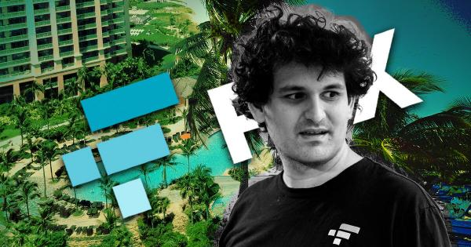
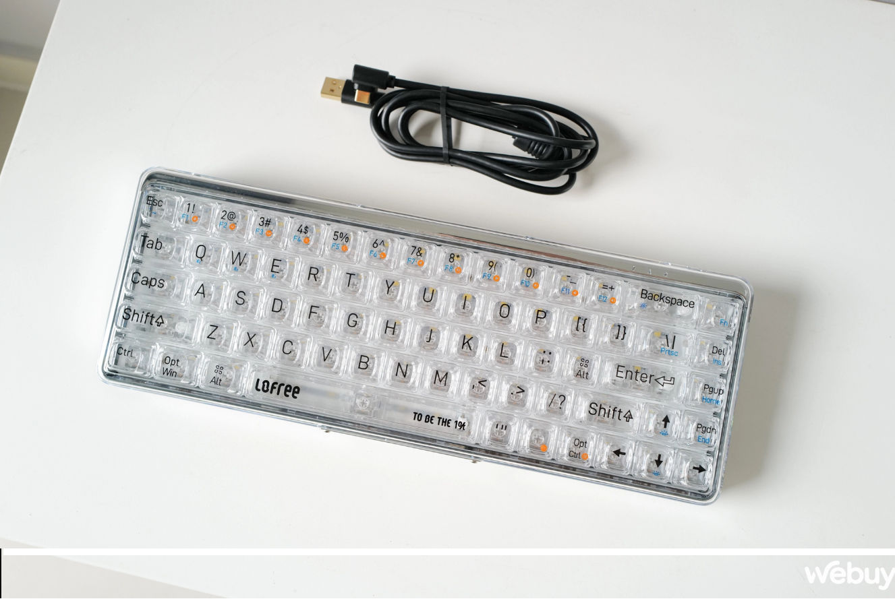

Bài Viết Gần Đây
Bài Viết Của Tôi

23/11/2022 / Tin công nghệ
Nhiều người còn chưa "lên đời" Windows 11, nhưng Windows 12 có thể sắp ra mắt
Năm ngoái, Microsoft đã thông báo rằng họ sẽ cung cấp bản cập nhật tính năng hàng năm cho Windows 10 và Windows 11, nhưng có vẻ như công ty sẽ phát hành những bản cập nhật lớn một cách “truyền thống” hơn, đó chính là phát hành luôn phiên bản Windows mới.
Đọc thêm

22/11/2022 / Thị trường điện tử
FTX và các giám đốc điều hành cấp cao đã mua 19 lô bất động sản trị giá 121 triệu đô la ở Bahamas
Sàn giao dịch tiền điện tử bị phá sản FTX, cùng với các giám đốc điều hành cấp cao của công ty và cha mẹ của Sam Bankman-Fried, đã mua ít nhất 19 lô bất động sản trị giá 121 triệu đô la ở Bahamas trong vòng hai năm qua, Reuters đưa tin vào ngày 22 tháng 11.
Đọc thêm

20/11/2022 / Thiết bị điện tử
Trên tay bàn phím Lofree To Be The 1%: Điểm độc lạ nằm ở sự trong suốt
Khác với những năm về trước, thế hệ bàn phím ngày nay không chỉ chú trọng về chất lượng, phím gõ mà bên cạnh đó còn phải có những yếu tố độc đáo ngay từ bên ngoài, To Be The 1% đến từ Lofree chính là ví dụ điển hình.
Đọc thêm